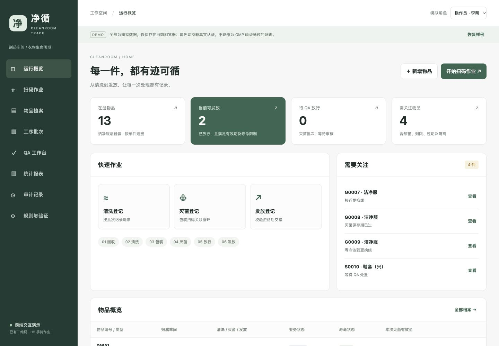

这里是用于需求沟通的演示站点。所有样例都是模拟数据，新建记录只保存在你当前使用的浏览器，不会同步给其他访问者。请使用虚构编号和姓名，不录入真实生产记录或个人信息。
两个车间300套，实物识别怎么选？
二维码、NFC 与手机拍照OCR。按300套、全厂共用3点估算；OCR改用3台专用手机，不再另购相机和电脑。
本页为已授权公开的预算假设，不是供应商报价。
查看成本对比与选型建议 ↗DOCUMENTS
同一套方案，不同阅读视角
先确认业务覆盖，再讨论功能实现与验证。
TRY IT / 10 MINUTES
第一次体验，从一件新衣开始
- 新增物品进入演示，使用“操作员”，新建一个虚构编号，例如 G0098。
- 扫码清洗在“扫码作业”选择清洗，输入编号并回车；确认装载，再到批次页登记完成。
- 包装与灭菌点击“检查与包装”封包，使用包装码开始灭菌，登记合格结果。
- QA 放行与发放切换模拟 QA 角色审核；再切回操作员进行发放，查看次数和完整履历。
试试异常场景：G0008 的灭菌保存期已过；G0009 已达到寿命上限。尝试发放会被拦截。同一物品重复扫码不会重复加入批次。
现在开始体验 ↗这版演示的边界
不含真实身份认证、电子签名、后台数据库或扫码硬件接口。示例阈值与有效期不是正式工艺标准。现有二维码内容、鞋套单位、灭菌方式与质量规则仍需现场调研；正式系统需要经批准的设计、验证和受控上线。